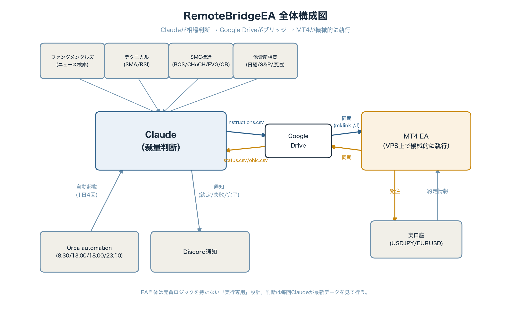

AIに「裁量トレード」をさせてみた話
— RemoteBridgeEAの仕組み
はじめに
うちの口座では、以前からルールベースの自動売買EA「DWV_Martin」が24時間休まず働いてくれています。複数の売買シグナルを重み付き多数決にかけ、カレンダー効果まで加味した、いわば「勤勉な機械」です。
今回作ったのはこれとは全く別物で、Claude（AI）が毎回相場を見て、その都度エントリー・決済を判断する「裁量ブリッジEA」です。名付けて RemoteBridgeEA。
MT4のEAというと「一度作ったロジックが延々と回り続ける」イメージが強いと思いますが、こちらのEAは自分では何も考えません。相場を分析して「買う」「売る」「様子見」を決めるのは全部Claude側で、EAはその指示をただ機械的に実行するだけの「手足」です。人間のトレーダーが裁量で判断し、注文執行だけシステムに任せる——それに近いことをAIにやらせてみた、という話です。
全体像
まず構成図を見てもらうのが早いと思います。

登場人物は3つだけです。
- Claude: 相場を分析し「買う/売る/様子見」を判断する頭脳
- Google Drive: ClaudeとMT4の間をつなぐ「橋」
- MT4 EA: VPS上で24時間稼働し、指示を機械的に実行するだけの「手足」
ClaudeはMT4に直接アクセスできませんし、MT4のEA（MQL4）はインターネット越しにAIと会話する機能を持っていません。そこで間にGoogle Driveを挟み、テキストファイルのやり取りだけで両者をつなぐ、という原始的といえば原始的な方法を取っています。
仕組みの詳細
やり取りするファイルは3つだけです。
| ファイル | 向き | 中身 |
|---|---|---|
instructions.csv | Claude → EA | エントリー・決済・SL変更などの指示 |
status.csv | EA → Claude | 口座残高・保有ポジションの状況 |
ohlc.csv | EA → Claude | 直近48本のH1（1時間足）ローソク足データ |
MT4のEAは自分のいる場所（MQL4\Filesフォルダ）の外を直接読み書きできないという制約があるので、Windows側のmklink /J（ジャンクション）という機能を使って、そのフォルダをまるごとGoogle Driveの同期フォルダに繋げています。EA自身は「いつも通りローカルのファイルを読み書きしているだけ」のつもりですが、実体はクラウド経由でMacにいるClaudeとやり取りしている、という仕掛けです。
Claudeの判断ロジック
毎回のチェックでClaudeが見ているのは、大きく4つの材料です。
- ファンダメンタルズ: その都度Web検索で、金融政策・経済指標・要人発言など直近のニュースを確認
- テクニカル: 移動平均線（SMA10/30、SMA20/50/200）とRSIでトレンドと過熱感を判断
- Smart Money Concepts（SMC）構造分析: 機関投資家目線の値動き解析。BOS（構造継続）・CHoCH（トレンド転換）・FVG（価格の非効率）・Order Block（反応しやすい価格帯）・流動性プール（ストップ狩りの標的になりやすい水準）を自作スクリプトで検出
- 他資産相関: 日経225・S&P500・原油(WTI)との相関を都度計算。実測ではEUR/USD×S&P500が最も強く安定した相関（直近60日で+0.6程度）を示していて、地味に一番効く材料だったりします
これらを踏まえて「動機薄→0.01ロット」「動機強→0.02ロット」「根拠不足→様子見」の3段階でロットサイズまで判断します。当初は「全部の材料が揃うまで待つ」姿勢で運用していましたが、それだと保守的になりすぎて機会を逃すことが分かってきたので、今は「主要な根拠が2つ以上揃えば動く」くらいのバランスに調整しています。
安全装置
裁量とはいえ実弾（実口座・実資金）が動くので、いくつかガードレールを敷いています。
- 1通貨ペアにつき同時に1ポジションまで
- 新規エントリーには必ずSL・TPを設定
- 「USDJPY買い＋EURUSD売り」のような同じテーマへの二重ベットを避ける
- 金曜夜の新規エントリーは、週末持ち越し・月曜窓開けギャップのリスクがあるため慎重に判断
- 想定外の急変時は非常停止コマンドで全ポジション決済＋EA停止
自動化とDiscord通知
当初は「エントリーする前に必ずチャットで私に確認する」運用にしていましたが、1日4回の自動実行の途中で承認待ちのまま止まってしまう、という問題が起きました（無人で動いているのに人間の返事を待っている状態になってしまうわけです）。そこで今は、エントリーの可否はClaudeが判断して即座に実行し、結果だけDiscordに通知する形に変えました。
- エントリー送信後、約定を確認できるまで最大3回まで自動リトライ
- 成功しても失敗しても、必ずDiscordに通知
- 「何かあれば人間がMT4を見て手動で対処する」という最終防波堤だけは残す
開発中にハマった話
実際にやってみると、想定していなかった落とし穴がいくつもありました。
指示ファイルを読み込む処理で、改行コードの扱いを間違えたところ、Windows側で無限ループに入りMT4全体がフリーズしました。原因は、Macで書いたファイルの改行コード（LF）と、MQL4が期待する改行コードの扱いの違い。読み込み方式をより頑健なものに変更し、念のため反復回数の上限も設けて再発防止しています。
MT4のTimeCurrent()はブローカーのサーバー時刻を返しますが、これはUTCと一致しません（実測でGMT+3相当）。この時差に気づかず指示にタイムスタンプを付けたところ、送った瞬間に「期限切れ」と判定されて無視される、という事態に。今はEA側がステータスファイルに自分の時刻を書き出し、Claudeは必ずその値を基準に次の指示を作るようにしています。
ポジションのSL（損切りライン）を建値の上に動かして利益を確保する「MODIFY」指示を送ったところ、実は計算式の仕様上、常に建値の下にSLが置かれる作りになっていました。翌日、そのポジションはストップ狩りに遭い、本来なら守れたはずの利益を守れないまま小幅な損失で決済されてしまいました。地味に一番効いた失敗です。
上の損切りが発生した時間帯を調べてみると、ちょうどロンドン市場の始まる時間と重なっていました。セッションの切り替わりで流動性が急増するタイミングは、直近高値・安値がまさに「刈り取られやすい」水準になる、という典型的なパターンだったようです。
おわりに
「AIに裁量トレードをさせる」というと大げさに聞こえますが、実態は「Claudeが分析して指示ファイルを書く」「MT4がそれを読んで注文する」という、地味なファイルのやり取りの積み重ねです。派手なアルゴリズムよりも、タイムゾーンのズレや改行コードといった地味な落とし穴の方が、実際には厄介だったというのが正直な感想です。
まだ発展途上ですが、判断材料を増やしたり、判断基準を調整したりしながら少しずつ育てています。今後の運用成績もまた別記事で追っていければと思います。